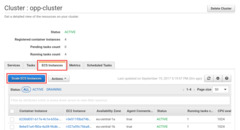
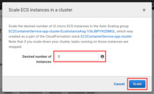
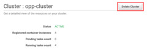
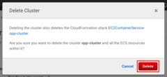

Trying It Out¶
Configuration¶
To try it out, we add a new Configuration to the routing sample that comes
with OMNeT++.
Append this section to the omnetpp.ini file in the samples/routing directory:
[Config MeshExperiment]
network = networks.Mesh
**.width = ${10..20 step 2}
**.height = ${10..20 step 2}
**.destAddresses = "0 2 5 6 9 14 17 18 23 27 29 36 42 52 89 123 150 183 192"
**.sendIaTime = uniform(100us, 10ms) # high traffic
**.vector-recording = false
sim-time-limit = 10s
This configuration tries to make each of its runs execute for a significant amount of time - about a minute each on average - by setting up a large network with a small packet inter-arrival time and a relatively long simulation time limit. It also disables vector recording to keep the size of the result files within the limits of the presented solution.
Execution¶
To run it, open a terminal, set up the necessary environment variables using
setenv, then change into the directory of the sample:
$ cd /path/to/omnetpp/ $ . setenv $ cd samples/routing
Then execute the client.py script, substituting the IP address of your Redis
server on AWS:
$ python3 /path/to/client.py ./routing -c MeshExperiment --redis-host 172.17.1.19
You should see all runs submitted to the job queue, and after a while, finishing
them. The results should appear in the results directory, just like with local
execution.
Comparison¶
You can compare the performance of the cloud solution with that of your own
machine by running the same campaign on both, through the time utility:
$ time python3 /path/to/client.py ./routing -c MeshExperiment --redis-host 172.17.1.19 … $ time opp_runall ./routing -c MeshExperiment
After the output of each command, time will print a summary of the execution
times.
Locally on my computer, using all 8 of its cores, the times were:
real 4m37.610s user 25m4.576s sys 0m0.870s
The most interesting from our perspective is the real time, as this shows the
amount of wall-clock time it took to run each command. The user time is the
net processing time. It is much more than the real time, because it is
aggregated across all cores.
And of the one running on AWS:
real 4m12.310s user 0m1.931s sys 0m1.925s
With just 3 single-core workers, the simulation completes faster than running
on 8 local cores. The user time is next to negligible in this case, because
my computer spent most of the time idling, waiting for the results to come back.
Shutting Down¶
To prevent the aimless and useless exhaustion of your Free Tier resource allowance (or in the long term, your credit card balance), it is important to terminate your allocated resources once you are done using them. In our case, these are the EC2 Instances started by the ECS Cluster. We need to shut these down, because when calculating their usage, the whole amount of time the instances are running (or paused, but kept available) is taken into account, not just the time when they were actually used, doing something useful.
If you wish to use the Cluster again later, the easiest thing to do is scaling
down the number of underlying EC2 Instances to 0. This will of course cause
all running tasks to stop, as they no longer have anything to run on.
 
Alternatively, you can delete the whole Cluster. This will also terminate the
EC2 Instances, but it will delete the worker Service as well.
 
The Task Definitions are not deleted either way, but this is not a problem, since they can be kept around indefinitely, free of charge.